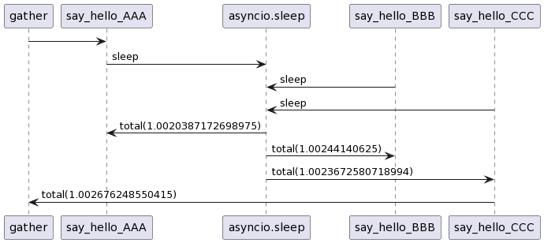

코루틴(coroutine)과 이벤트 루프
코루틴(coroutine)과 이벤트 루프
코루틴 (coroutine)
파이썬의 코루틴(coroutine)은 비동기 프로그래밍 및 동시성 작업을 구현하는데 사용되는 중요한 개념입니다.
동시성 패턴
동시성 패턴은 프로그램이 여러 작업을 동시에 처리하거나 병령로 실행할 수 있도록 하는 디자인 패턴을 말합니다. 멀티스레딩, 멀티프로세싱, 이벤트루프, 코루틴 등이 동시성 패턴 중 하나입니다.
코루틴은 루틴의 실행을 일시 중지하고 다른 작업을 처리한 다음 나중에 돌아오는 비동기적 함수 입니다. 코루틴은 이벤트 루프와 함께 사용하여 비동기 작업을 관리합니다.
코루틴과 이벤트루프
코루틴과 이벤트 루프는 비동기 프로그래밍과 동시성 작업을 관리하는 데 중요한 개념입니다.
- 이벤트 루프 : 이벤트 루프틑 비동기적으로 실행되는 작업을 관리하고, 이벤트가 발생할 때 해당작업을 실행하고 작업들 사이의 실행을 조절합니다.
- 코루틴 : 코루틴은 비동기적인 작업을 처리하기 위한 함수로 중단되고 재개될 수 있는 함수입니다. 이런 특성을 활용해서 이벤트 루프에 의해서 제어됩니다.
파이썬에서는 이벤트 루프와 코루틴을 사용하기 위한 표준 라이브러리로 asyncio를 제공합니다. async키워드와 await키워드를 사용해서 비동기 함수를 정의하고 실행합니다.
비동기 작업은 어떤 경우에 주로 사용될까요? 주로 파일 I/O, 네트워크 요청 등을 처리하는 데 사용됩니다. 블로킹되지 않고 비동기적으로 처리되기 때문에 여러작업을 동시에 처리할 수 있어 반응이 빨라집니다.
비동기 함수가 동작하는 방식을 예제 코드로 정리합니다.
import asyncio
import time
async def say_hello(name):
print(f"say_hello_{name} -> asyncio.sleep : sleep")
start_time = time.time()
await asyncio.sleep(1)
end_time = time.time()
print(f"asyncio.sleep -> say_hello_{name} : total({end_time - start_time})")
async def main():
print("@startuml")
print("main -> say_hello_AAA")
start_time = time.time()
await asyncio.gather(
say_hello("AAA"),
say_hello("BBB"),
say_hello("CCC"),
)
end_time = time.time()
print(f"say_hello_CCC -> main : total({end_time - start_time})")
print("@enduml")
if __name__ == "__main__":
asyncio.run(main())위의 코드에서 코드틴 함수인 say_hello는 함수에서 비동기적인 대기를 진행합니다. 비동기코드에서 특정 시간동안 대기하고 다른 적읍을 실행할 수 있도록 합니다.
시퀀스 다이어그램으로 동작을 확인합니다. asyncio.gather()는 say_hello함수 3개가 동시에 실행될 수 있도록 합니다.

gather함수가 3개의 say_hello 함수 실행을 완료한 시간은 총 1초입니다. 동기함수로 구현되어 sleep을 사용했다면 1초의 대기 시간동안 다른 함수의 실행이 불가능하지만 비동기 함수로 구현하여 대기 시간동안 다른 함수가 실행됩니다.
이벤트 루프
이벤트 루프는 async로 정의된 비동기 함수(코루틴)을 실행합니다. 각 함수들은 await키워드를 사용하여 비동기적으로 실행되며 이벤트 루프는 이러한 작업을 관리합니다. 이벤트 루프를 사용하면 다른 루프의 작업과 상호 간섭없이 동작합니다. 여러 비동기 작업을 분리하거나 병렬로 처리하기 위해 사용합니다.
asyncio 라이브러리에서는 쓰레드는 하나의 이벤트 루프를 생성하며 asyncio.run()함수는 현재 쓰레드의 기본 이벤트 루프를 자동으로 사용합니다. 따라서 새로운 이벤트 루프를 생성하는 경우 쓰레드에 사용할 이벤트 루프를 연결하는 과정이 필요합니다.
아래의 코드는 새로운 이벤트 루프를 생성해서 실행되는 쓰레드의 이벤트 루프를 변경하는 예제 코드입니다.
import asyncio
import threading
async def simple_task(name, delay):
print(f"Task {name} 시작")
await asyncio.sleep(delay)
print(f"Task {name} 완료")
def create_and_run_event_loop():
print("[STEP] 새로운 이벤트 루프 생성")
new_loop = asyncio.new_event_loop()
print("[STEP] 생성된 루프를 현재 스레드의 이벤트 루프로 설정")
asyncio.set_event_loop(new_loop)
try:
print("[STEP] 비동기 함수 실행")
new_loop.run(simple_task("새 루프 태스크", 2))
finally:
print("[STEP] 이벤트 루프 닫기")
new_loop.close()
if __name__ == "__main__":
print("[STEP] 메인 함수에서 새 이벤트 루프 생성 및 실행")
create_and_run_event_loop()[STEP] 메인 함수에서 새 이벤트 루프 생성 및 실행
[STEP] 새로운 이벤트 루프 생성
[STEP] 생성된 루프를 현재 스레드의 이벤트 루프로 설정
[STEP] 비동기 함수 실행
Task 새 루프 태스크 시작
Task 새 루프 태스크 완료
[STEP] 이벤트 루프 닫기출력 결과로 실행 순서를 확인합니다. new_event_loop함수로 이벤트 루프를 생성합니다. 생된된 이벤트 루프는 set_event_loop함수로 현제 쓰레드에 이벤트 루프로 설정합니다. run_until_complete 함수는 인자로 받은 코루틴을 실행합니다.
이벤트 루프에 전달된 코루틴 함수 simple_task는 이벤트 루프에 의해서 실행되어 Task 새 루프 태스크 시작과 Task 새 루프 태스크 완료 로그를 출력합니다.